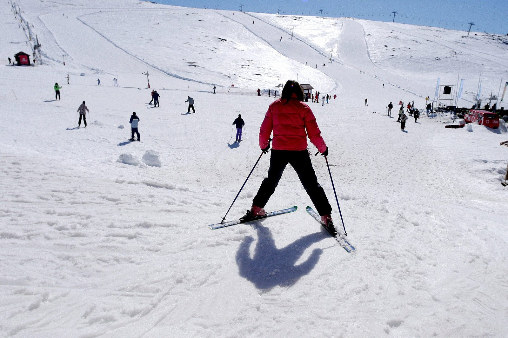
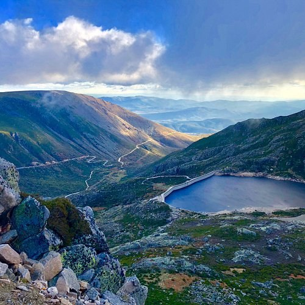
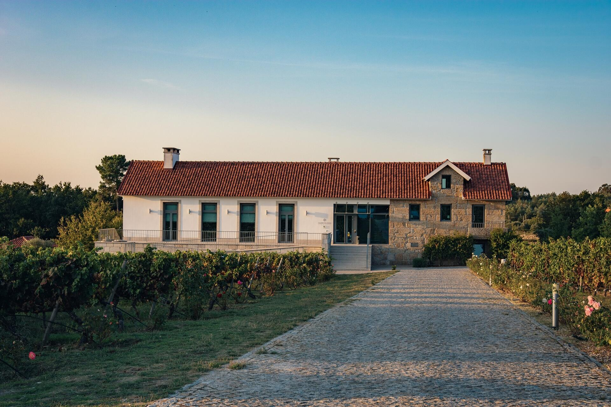
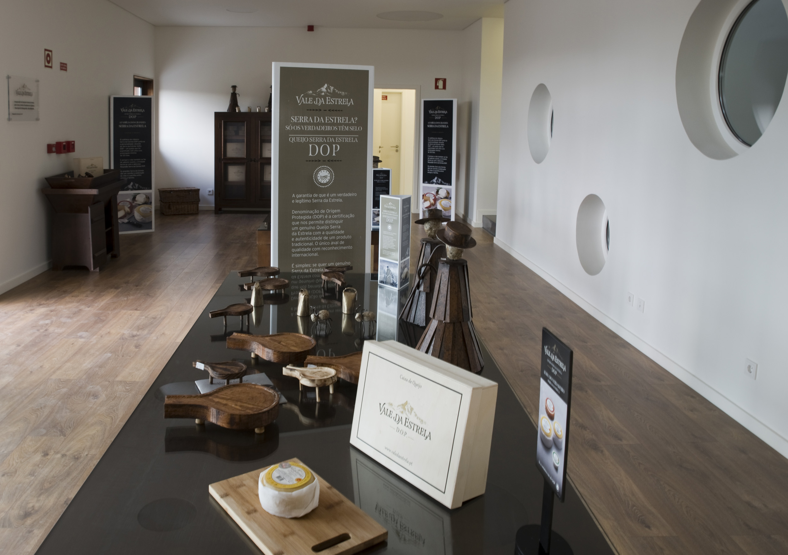

Poda e lareira
A vinha descansa e começa a poda. Lá fora está frio; cá dentro, a lareira fica acesa o dia inteiro. Com sorte, há neve nos pontos altos da serra.
Cada mês traz um trabalho diferente na terra. Escolha um mês no gráfico para ver o que acontece nessa altura e em que atividades pode participar.
Horas de luz por dia, a meio de cada mês. Clique num mês para filtrar as atividades.
Escolha um mês no gráfico para ver o trabalho dessa altura e só as atividades desse mês.
A vinha descansa e começa a poda. Lá fora está frio; cá dentro, a lareira fica acesa o dia inteiro. Com sorte, há neve nos pontos altos da serra.
Limpam-se as oliveiras e as árvores de fruto. Os dias começam a crescer e há manhãs de geada no vale.
Rebentam as primeiras folhas na vinha e o pomar começa a florir. Boa altura para caminhar antes do calor.
As árvores de fruto estão em flor e a erva cresce alta entre as oliveiras.
A serra fica amarela com as giestas em flor. Na quinta, a vinha lança os primeiros cachos.
Chegam as cerejas e a primeira fruta do pomar. Os jantares passam para o pátio e acabam tarde.
Os dias são quentes, mas a altitude traz noites frescas. As tardes passam-se nas praias fluviais e na lagoa do Vale do Rossim.
As figueiras junto ao pátio dão figos. É o mês das festas nas aldeias.
Apanham-se as uvas da vinha e os últimos figos. A luz do fim da tarde sobre o vale é das mais bonitas do ano.
Cai a noz no nogueiral e começam as castanhas. As folhas da vinha ficam amarelas e vermelhas.
Varejam-se as oliveiras e a azeitona segue para o lagar. Pelo São Martinho há magusto.
Azeite novo no pão, queijo da serra e a lareira outra vez acesa. A Torre costuma ter neve.
Aprenda a podar as videiras com quem trabalha a vinha há muitos anos.
Ver como é: Poda da vinhaPão quente, azeite acabado de fazer e queijo da serra, junto à lareira.
Ver como é: Prova do azeite novoUm passeio entre as árvores de fruto em flor, com paragem no nogueiral.
Ver como é: Passeio pelo pomar em florCaminhada pela encosta quando a serra fica amarela com as giestas.
Ver como é: Caminhada das giestasApanhar a fruta do pomar para o pequeno-almoço e para levar para casa.
Ver como é: Apanha da cereja e da frutaFigos das figueiras do pátio, para comer frescos ou fazer doce.
Ver como é: Apanha dos figosParticipe na vindima: de tesoura e cesto na mão, ao longo das filas da vinha.
Ver como é: Apanha da uvaNo fim da vindima, as uvas pisam-se como antigamente, a pé descalço.
Ver como é: Pisa das uvasApanhar as nozes que caem no nogueiral e pô-las a secar.
Ver como é: Apanha da nozVarejar as oliveiras, apanhar a azeitona dos panos e acompanhá-la até ao lagar.
Ver como é: Apanha da azeitonaCastanhas assadas na fogueira, ao fim do dia de apanha.
Ver como é: Magusto de São MartinhoPara completar a estadia, organizamos saídas e provas fora da quinta. O preço é indicado na resposta ao pedido de reserva.
Um dia na estância de ski da Serra da Estrela, com ski, snowboard e brincadeiras na neve.
Ver como é: Serra com neveTorre, Vale do Rossim, Manteigas e o vale glaciar do Zêzere, com guia e transporte a partir da quinta.
Ver como é: Visita guiada à Serra da EstrelaProva de cinco vinhos do Dão numa quinta vizinha, em Vinhó, Gouveia.
Ver como é: Prova de vinhos na Quinta Madre de ÁguaVer como se faz o queijo Serra da Estrela DOP, numa queijaria em Mangualde.
Ver como é: Visita à Queijaria Vale da EstrelaComeçamos por ver como ficou a vinha depois do outono. Depois, cada pessoa recebe uma tesoura de poda e aprende que varas cortar e quais deixar para darem uva no ano seguinte.
Junto à lareira, prova-se o azeite acabado de chegar do lagar: primeiro simples, depois com pão quente e queijo da serra. Explicamos como se reconhece um bom azeite pelo cheiro e pelo sabor.
Passeio a pé pela quinta quando o pomar está em flor, com paragem no nogueiral e no olival. É a altura do ano em que a paisagem muda mais de semana para semana.
Caminhada pela encosta acima da quinta, entre giestas em flor e com vista sobre o vale do Mondego. O ritmo é calmo e há paragens para descansar.
Apanham-se as cerejas e a fruta madura diretamente das árvores do pomar. O que se apanha fica para o pequeno-almoço ou para levar para casa.
De tesoura e cesto na mão, percorrem-se as filas da vinha a cortar os cachos maduros. Os cestos cheios seguem para o lagar, onde depois se faz a pisa.
No fim da vindima, as uvas pisam-se a pé descalço, como se fazia antigamente, até o mosto começar a correr. É a atividade preferida das crianças.
Depois da pisa, o bagaço vai para a prensa de madeira do lagar, para tirar o resto do mosto.
Estendem-se os panos debaixo das oliveiras e varejam-se os ramos para a azeitona cair. Depois apanha-se dos panos e enchem-se as sacas que seguem para o lagar.
Ao fim de um dia de apanha, assam-se castanhas na fogueira e conta-se como correu o dia. Pelo São Martinho é tradição em toda a região.

Quando a serra tem neve, levamos-vos à estância de ski, ao pé da Torre. Há pistas para quem começa e para quem já desce sozinho, e zonas abertas para andar de trenó e fazer bonecos de neve.

Um dia com guia pela serra, com transporte a partir da quinta. Sobe-se à Torre, pára-se no Vale do Rossim, desce-se a Manteigas pelo vale glaciar do Zêzere e almoça-se pelo caminho.

A poucos minutos da quinta, em Vinhó, a Madre de Água faz vinho do Dão ao pé da serra. Com um guia da casa, escolhe cinco vinhos para provar, acompanhados de produtos da região.

Em Mangualde, a cerca de 40 minutos da quinta, a Vale da Estrela faz queijo Serra da Estrela DOP com leite de ovelha. Na visita guiada vê-se todo o processo, do leite à cura, e há vídeos sobre a pastorícia e o queijo na serra.